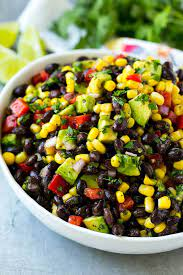

Black Bean Ceviche

Description:
This vegan take on ceviche is more of a black bean salad - the most delicious salad you can eat!
The black beans "cook" in the lime juice and come out deliciously tart. Enjoy on a tortilla,
lettuce wrap, chips, or by the spoonful! This 20 minute recipe will become a staple in your home.
Ingredients:
- 1 15 oz can black beans, rinsed and drained
- 2 small limes
- 1 cup frozen corn kernels
- 3 roma tomatoes, diced
- 1 large avocado, diced
- 3 green onions, sliced thin
- 1 handful cilantro, finely chopped
- 1/2 tsp cumin
- 1/2 tsp chili powder
- 1/4 tsp smoked paprik
- salt and pepper to taste
Directions:
- Pour drained black beans into a bowl. Squeeze limes over top and mix to coat.
Allow to sit for about 15 minutes.
- While the beans soak, add corn kernels to a medium saucepan, and cook over medium heat until it starts to get brown and caramelized.
Remove from heat and allow to cool.
- Add the corn, tomatoes, avocado, green onions, cilantro, cumin, chili powder, smoked paprika, salt, and pepper to the beans. Mix to combine thoroughly.